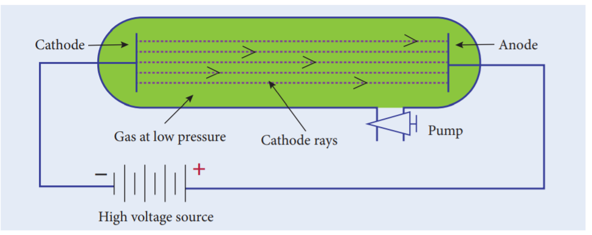
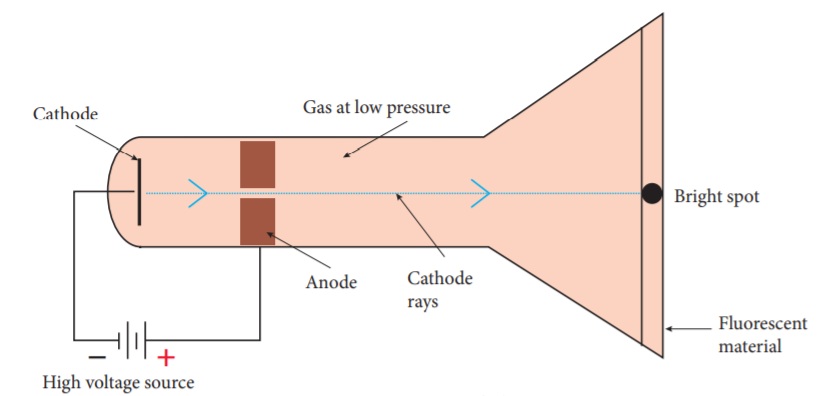
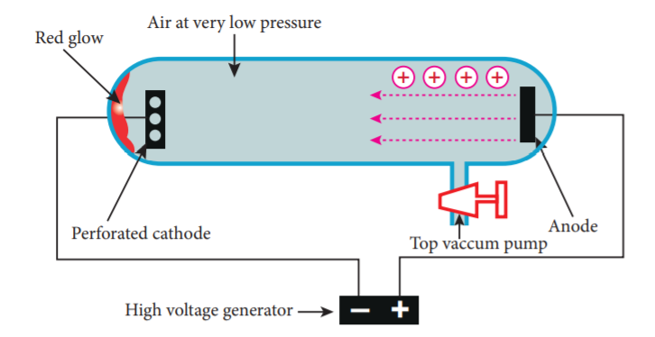
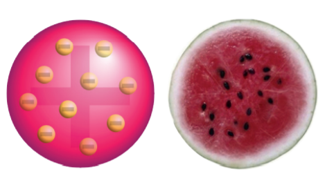
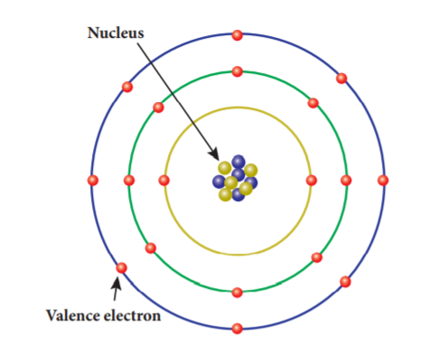
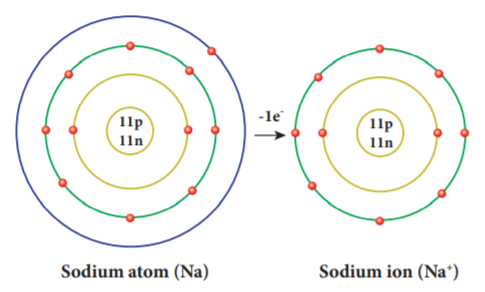
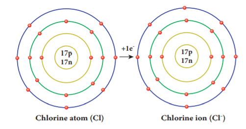
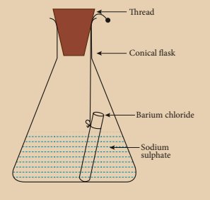

After the completion of this lesson, students will be able to:
Every substance in our surrounding is made up of unique elements. There are 118 elements identified worldwide so far. Out of these elements, 92 elements occur in the nature and the remaining elements are synthesised in the laboratories. Copper, Iron, Gold and Silver are some of the elements found in the nature. Elements like Technetium, Promethium, Neptunium and Plutonium are synthesised in the laboratories. Each element is made up of similar, minute particles called atoms. For example, the element gold is made up of gold atoms which determine its characteristics. The word atom is derived from the Greek word atomas. Tomos means smallest divisible particle and atomas means smallest indivisible particle. Ancient Greek philosophers like Democritus, have spoken about atoms. Even our Tamil poet Avvaiyar has mentioned about atoms in her poem while describing Thirukkural (அணுவைத் துளைத்து ஏழ் கடலைப்புகட்டிக் குறுகத் தரித்த குறள்). But, none of them have scientific base. The first scientific theory about atom was given by John Dalton. Followed by him, J. J. Thomson and Rutherford have given their theory about atom. In this lesson, we will study how atomic theories evolved at different times. We will also study about valency, molecular formula, rules for naming chemical compounds and balancing chemical equations.
John Dalton provided a basic theory about the nature of matter. He proposed a model of atom known as Dalton’s atomic theory in 1808 based on his experiments. The main postulates of Dalton’s atomic theory are:
Do you know?
John Dalton, son of a poor weaver, began his career as a village school teacher at the age of 12. He became the principal of the school seven years later. In 1793, he moved to Manchester to teach Physics, Chemistry and Mathematics in a college. He proposed his atomic theory in 1803. He carefully recorded each day, the temperature, pressure and amount of rainfall from his youth till the end. He was a meticulous meteorologist.

In 1878, Sir William Crookes, while conducting an experiment using a discharge tube, found certain visible rays travelling between two metal electrodes. These rays are known as Crookes’ Rays or Cathode Rays. The discharge tube used in the experiment is now referred as Crookes tube or more popularly as Cathode Ray Tube (C R T).
Cathode Ray Tube is a long glass tube filled with gas and sealed at both the ends. It consists of two metal plates (which act as electrodes) connected with high voltage. The electrode which is connected to the negative terminal of the battery is called the cathode (negative electrode). The electrode connected to the positive terminal is called the anode (positive electrode). There is a side tube which is connected to a pump. The pump is used to lower the pressure inside the discharge tube.
Do you know?
Electricity, when passes through air, removes the electrons from the gaseous atoms and produces cations. This is called electrical discharge.
When a high electric voltage of 10,000 volts or more is applied to the electrode of a discharge tube containing air or any gas at atmospheric pressure, no electricity flows through the air. However, when the high voltage of 10,000 volts is applied to the electrodes of discharge tube containing air or any gas at a very low pressure of about 0.001 mm of mercury, a greenish glow is observed on the walls of the discharge tube behind anode. This observation clearly shows some invisible ray coming from the cathode. Hence, these rays are called cathode rays. Later, they were named as electrons.
Do you know?
The fact that air is a poor conductor of electricity is a blessing in disguise for us. Imagine what would happen if air had been a good conductor of electricity. All of us would have got electrocuted, when a minor spark was produced by accident.
Properties of Cathode rays

Do you know?
In television tube cathode rays are deflected by magnetic fields. A beam of cathode rays is directed toward a coated screen on the front of the tube, where by varying the magnetic field generated by electromagnetic coils, the beam traces a luminescent image.
The presence of positively charged particles in the atom has been precisely predicted by Goldstein based on the conception that the atom being electrically neutral in nature, should necessarily possess positively charged particles to balance the negatively charged electrons.
Goldstein repeated the cathode ray experiment by using a perforated cathode. On applying a high voltage under low pressure, he observed a faint red glow on the wall behind the cathode. Since these rays originated from the anode, they were called anode rays or canal rays or positive rays. Anode rays were found as a stream of positively charged particles

Do you know?
When invisible radiation falls on materials like zinc sulphide, they emit a visible light (or glow). These materials are called fluorescent materials.
Properties of Anode rays
Do you know?
When hydrogen gas was taken in a discharge tube, the positively charged particles obtained from the hydrogen gas were called protons. Each of these protons are produced when one electron is removed from one hydrogen atom. Thus, a proton can be defined as an hydrogen ion (H plus). H gives H plus plus e minus
12 point 2 point 3 Discovery of Neutrons
At the time of J. J. Thomson, only two fundamental particles (proton and electron) were known. In the year 1932, James Chadwick discovered another fundamental particle, called neutron. But, the proper position of these particles in an atom was not clear till Rutherford described the structure of atom. You will study about Rutherford’s atom model in your higher classes.
Properties of Neutrons
Table 12 point 1 Properties of Fundamental particles.
Particle |
Mass |
Relative charge
|
Electron (e) |
9.1 into 10 power minus 24 grams |
Minus one |
Proton (p) |
1.6 into 10 power minus 24 grams |
Plus one |
Neutron (n) |
1.6 into 10 power minus 24 grams |
0 |
Activity 1
Collect more information about the properties of fundamental particles and prepare a chart.
J.J. Thomson, an English scientist, proposed the famous atom model in the year 1904, just after the discovery of electrons.
Thomson proposed that the shape of an atom resembles a sphere having a radius of the order of 10-10 m. The positively charged particles are uniformly distributed with electrons arranged in such a manner that the atom is electrically neutral. Thomson’s atom model was also called as the plum pudding model or the watermelon model. The embedded electrons resembled the seed of watermelon while the watermelon’s red mass represented the positive charge distribution. The plum pudding atomic theory assumed that the mass of an atom is uniformly distributed all over the atom.

Thomson’s atom model could successfully explain the electrical neutrality of atom. However, it failed to explain the following.
1. Thomson’s model failed to explain how the positively charged sphere is shielded from the negatively charged electrons without getting neutralised.
2. This theory explains only about the protons and electrons and failed to explain the presence of neutral particle neutron.
In order to understand valency of elements clearly, we need to learn a little about Rutherford’s atomic model here. According to Rutherford, an atom consists of subatomic particles namely, proton, electron and neutrons. Protons and neutrons are found at the centre of an atom, called nucleus. Electrons are revolving around the nucleus in a circular path, called orbits or shells. An atom has a number of orbits and each orbit has electrons. The electrons revolving in the outermost orbit are called valence electrons.

The arrangement of electrons in the orbits is known as electronic configuration. Atoms of all the elements will tend to have a stable electronic configuration, that is, they will tend to have either two electrons (known as duplet) or eight electrons (known as octet) in their outermost orbit. For example, helium has two electrons in the outermost orbit and so it is chemically inert. Similarly, neon is chemically inert because, it has eight electrons in the outermost orbit.
The valence electrons in an atom readily participate in a chemical reaction and so the chemical properties of an element are determined by these electrons. When molecules are formed, atoms combine together in a fixed proportion because each atom has different combining capacity. This combining capacity of an atom is called valency. Valency is defined as the number of electrons lost, gained or shared by an atom in a chemical combination so that it becomes chemically inert.
As we saw earlier, an atom will either gain or lose electrons in order to attain the stable electronic configuration. In order to understand valency in a better way, it can be explained in two ways depending on whether an atom gains or losses electrons.
Atoms of all metals will have 1 to 3 electrons in their outermost orbit. By losing these electrons, they will have stable electronic configuration. So, they lose them to other atoms in a chemical reaction and become positively charged. Such atoms which donate electrons are said to have positive valency. For example, sodium atom (Atomic number: 11) has one electron in its outermost orbit and in order to have stability it loses one electron and becomes positively charged. Thus, sodium has positive valency.
All non-metals will have 3 to 7 electrons in the outermost orbit of their atoms. In order to attain stable electronic configuration, they need few electrons. They accept these electrons from other atoms in a chemical reaction and become negatively charged. These atoms which accept electrons are said to have negative valency. For example, chlorine atom (Atomic number: 17) has seven electrons in its outermost orbit. By gaining one electron it attains stable electronic configuration, like inert gas electronic configuration. Thus, chlorine has negative valency.
Valency of an element is also determined with respect to other atoms. Generally, valency of an atom is determined with respect to hydrogen, oxygen and chlorine.
a. Valency with respect to Hydrogen
Since hydrogen atom loses one electron in its outermost orbit, its valency is taken as one and it is selected as the standard. Valencies of the other elements are expressed in terms of hydrogen. Thus, valency of an element can also be defined as the number of hydrogen atoms which combine with one atom of it. In hydrogen chloride molecule, one hydrogen atom combines with one chlorine atom. Thus, the valency of chlorine is one. Similarly, in water molecule, two hydrogen atoms combine with one oxygen atom. So, valency of oxygen is two.
Since some of the elements do not combine with hydrogen, the valency of the element is also defined in terms of other elements like chlorine or oxygen. This is because almost all the elements combine with chlorine and oxygen.
Table 12 point 2 Valency of atoms
Molecule |
Element |
Valency |
Hydrogen chloride (H C l) |
Chlorine |
1 |
Water (H 2 O) |
Oxygen |
2 |
Ammonia (N H 3) |
Nitrogen |
3 |
Methane (C H 4) |
Carbon |
4 |
b. Valency with respect to Chlorine
Since valency of chlorine is one, the number of chlorine atoms with which one atom of an element can combine is called its valency. In sodium chloride (Na Cl) molecule, one chlorine atom combines with one sodium atom. So, the valency of sodium is one. But, in magnesium chloride (Mg Cl2) valency of magnesium is two because it combines with two chlorine atoms.
c. Valency with respect to oxygen
In another way, valency can be defined as double the number of oxygen atoms with which one atom of an element can combine because valency of oxygen is two. For example, in magnesium oxide (M g O) valency of magnesium is two.
Atoms of some elements combine with atoms of other elements and form more than one product. Thus, they are said to have different combining capacity. These atoms have more than one valency. Some cations exhibit more than one valency. For example, copper combines with oxygen and forms two products namely cuprous oxide (C u 2 O) and cupric oxide (C u O). In C u 2 O, valency of copper is one and in Cu O valency of copper is two. For lower valency a suffix ous is attached at the end of the name of the metal. For higher valency a suffix ic is attached at the end of the name of the metal. Sometimes Roman numeral such as 1, 2, 3, 4 etc. indicated in parenthesis followed by the name of the metal can also be used.
Table 12 point 3 Metals with variable Valencies
Element |
Cation |
Names |
Copper |
C u plus |
Cuprous (or) Copper (1) |
|
C u 2 plus |
Cupric (or) Copper (2) |
Iron |
F e 2 plus |
Ferrous (or) Iron (2) |
|
F e 3 plus |
Ferric (or) Iron (3) |
Mercury |
H g plus |
Mercurous (or) Mercury (1) |
|
H g 2 plus |
Mercuric (or) Mercury (2) |
Tin |
S n 2 plus |
Stannous (or) Tin (2) |
|
S n 4 plus |
Stannic (or) Tin (4) |
In an atom, the number of protons is equal to the number of electrons and so the atom is electrically neutral. But, during chemical reactions atoms try to attain stable electronic configuration (duplet or octet) either by gaining or losing one or more electrons according to valency. When an atom gains an electron it has more number of electrons and thus it carries negative charge. At the same time when an atom loses an electron it has more number of protons and thus it carries positive charge. These atoms which carry positive or negative charges are called ions. The number of electrons gained or lost by an atom is shown as a superscript to the right of its symbol. When an atom loses an electron, ‘plus’ sign is shown in the superscript and ‘minus’ sign is shown if an electron is gained by an atom. Sometimes, two or more atoms of different elements collectively loss or gain electrons to acquire positive or negative charge. Thus we can say, an atom or a group of atoms when they either loss or gain electrons, get converted into ions or radicals.
Ions are classified into two types. They are cations and anions.
Cations
If an atom loses one or more electrons during a chemical reaction, it will have more number of positive charge on it. These are called cations (or) positive radicals. Sodium atom loses one electron to attain stability and it becomes cation. Sodium ion is represented as N a plus

Anions
If an atom gains one or more electrons during a chemical reaction, it will have more number of negative charge on it. These are called anions or negative radicals. Chlorine atom attains stable electronic configuration by gaining an electron. Thus, it becomes anion. Chlorine ion is represented as C l minus.

During a chemical reaction, an atom may gain or lose more than one electron. An ion or radical is classified as monovalent, divalent, trivalent or tetravalent when the number of charges over it is 1,2,3 or 4 respectively. Based on the charges carried by the ions, they will have different valencies.
Valency of Anions (negative radicals) and Cations (positive radicals)
The valency of an anion or cation is a number which expresses the number of hydrogen atoms or any other monovalent atoms (N a, K, C l….) which combine with them to give an appropriate compound. For example, two hydrogen atoms combine with one sulphate ions (S O 4 power two minus) to form sulphuric acid (H 2 S O 4). So, the valency of S O 4 power two minus is 2. One chlorine atom (C l) combines with one ammonium ion (N H 4 power plus ) to form N H 4 C l. So, the valency of N H 4 power plus is 1. Valencies of some anions and cations and their corresponding compounds are given below
Table 12 point 4 Valencies of some anions
Compound |
Name of the anion |
Formula of anion |
Valency of anion |
H C l |
Chloride |
C l minus |
1 |
H 2 S O 4 |
Sulphate |
S O 4 power two minus |
2 |
H N O 3 |
Nitrate |
N O 3 minus |
1 |
H 2 C O 3 |
Carbonate |
C O 3 power two minus |
2 |
H 3 P O 4 |
Phosphate |
P O 4 power three minus |
3 |
H 2 O |
Oxide |
O 2 power minus |
2 |
H 2 S |
Sulphide |
S 2 power minus |
2 |
N a O H |
hydroxide |
O H power minus |
1 |
Table 12.5 Valencies of some cations
Compound |
Name of the anion |
Formula of anion |
Valency of anion |
N a C l |
Sodium |
N a plus |
1 |
K C l |
potassium |
K plus |
1 |
N H 4 C l |
Ammonium |
N H 4 plus |
1 |
M g C l 2 |
Magnesium |
M g 2 plus |
2 |
C a C l 2 |
Calcium |
C a 2 plus |
2 |
A l C l 3 |
Aluminium |
A l 3 plus |
3 |
Activity 2
Classify the following ions into monovalent, divalent and trivalent.
N I 2 plus, F e 3 plus, C u 2 plus, B a 2 plus, C s plus , Z n 2 plus, C d 2 plus, H g 2 plus, P b 2 plus, M n 2 plus, F e 2 plus, C o 2 plus, S r 2 plus, C r 3 plus, L i plus, C a 2 plus, A l 3 plus
Chemical formula is the shorthand notation of a molecule (compound). It shows the actual number of atoms of each element present in a molecule of a substance. Certain steps are followed to write down the chemical formula of a substance. They are given below.
Step 1: Write down the symbols of elements/ ions side by side so that the positive radical is on the left and the negative radical is on the right hand side.
Step 2: Write the valencies of the two radicals above their symbols to the right in superscript (Signs ‘plus’ and ‘ minus ’ of the ions are omitted).
Step 3: Reduce the valencies to simplest ratio if needed. Otherwise interchange the valencies of the elements/ions. Write these numbers as subscripts. However, ‘1’ appearing on the superscript of the symbol is omitted.
Thus, we arrive the chemical formula of the compound.
Let us derive the chemical formula for calcium chloride.
Step 1: Write the symbols of calcium and chlorine side by side. C a C l
Step 2: Write the valencies of calcium and chlorine above their symbols to the right. C a 2 C l 1
Step 3: Interchange the valencies of elements. C a C l 2
Thus the chemical formula for calcium chloride is C a C l 2
Activity 3
Write the chemical formula of the compounds.
Compound |
Symbols with valencies |
Simplest ratio if any |
Chemical formula |
Magnesium chloride |
|
|
|
Sodium hydroxide |
|
|
|
Calcium oxide |
|
|
|
Aluminium sulphate |
|
|
|
Calcium phosphate |
|
|
|
A chemical compound is a substance formed out of more than one element joined together by chemical bond. Such compounds have properties that are unique from that of the elements that formed them. While naming these compounds specific ways are followed. They are given below.
1. In naming a compound containing a metal and a non-metal, the name of the metal is written first and the name of the non-metal is written next after adding the suffix-‘ide’ to its name.
Examples:
N a C l - Sodium chloride
A g B r - Silver bromide
2. In naming a compound containing a metal, a non-metal and oxygen, name of the metal is written first and name of the non-metal with oxygen is written next after adding the suffix- ‘ate’ (for more atoms of oxygen) or – ite (for less atoms of oxygen) to its name.
Examples:
N a 2 S O 4 - Sodium sulphate
N a N O 2 - Sodium nitrite
3. In naming a compound containing two non metals only, the prefix mono, dai, tri, tetra, penta etc. is written before the name of non- metals.
Examples:
S O 2 - Sulphur dioxide
N 2 O 5 - Dinitrogen pentoxide
Activity 4
Write the names of the chemical compounds.
Chemical Compound |
Name |
S O 3 |
|
N a 2 S O 3 |
|
P C l 5 |
|
C a C l 2 |
|
N a N O 3 |
|
B a O |
|
A chemical equation is a short hand representation of a chemical reaction with the help of chemical symbols and formulae. Every chemical equation has two components: reactants and products. Reactants are the substances that take part in a chemical reaction and the products are the substances that are formed in a chemical reaction.
Before writing the balanced equation of a chemical reaction, skeletal equation is written. The following are the steps involved in writing the skeletal equation.
1. Write the symbols and formulae of each of the reactants on the left hand side (LHS) and join them by plus (+) sign.
2. Follow them by an arrow (→) which is interpreted as gives or forms.
3. Write on the right hand side (R H S) of arrow the symbols and formulae for each of the products.
4. If the product is a gas it should be represented by upward arrow (↑) and if it is a precipitate it should be represented by downward arrow (↓).
Example: M g plus H 2 S O 4 gives M g S O 4 plus H 2↑
5. The equation thus written is called as skeleton equation (unbalanced equation).
According to law of conservation of mass, the total mass of all the atoms forming the reactants should be equal to that of all the atoms forming the products. This law will hold good only when the number of atoms of all types of elements on both sides is equal. A balanced chemical equation is one in which the total number of atoms of any element on the reactant side is equal to the total number of atoms of that element on the product side.
There are many methods of balancing a chemical equation. Trial and error method (direct inspection), fractional method and odd number-even number method are some of them. While balancing a chemical equation following points are to be borne in mind.
1. Initially the number of times an element occurs on both sides of the skeleton equation should be counted.
2. An element which occurs least number of times in reactant and product side must be balanced first. Then, elements occuring two times, elements occuring three times and so on in an increasing order must be balanced.
3. When two or more elements occur same number of times, the metallic element is balanced first in preference to non-metallic element. If more than one metal or nonmetal is present then a metal or non-metal with higher atomic mass (refer periodic table to find the atomic mass) is balanced first.
4. The number of molecules of reactants and products are written as coefficient.
5. The formula should not be changed to make the elements equal.
6. Fractional method of balancing must be employed only for molecule of an element (O2,H2,O3,P4,…) not for compound (H 2 O, N H 3,…)
Now let us balance the equation for the reaction of hydrogen and oxygen which gives water. Write the word equation and balance it.
Step1: Write the word equation. Hydrogen plus Oxygen gives Water
Step2: Write the skeleton equation. H 2 plus O 2 gives H 2 O
Step3: Select the element which is to be balanced first based on the number of times an element occurs on both sides of the skeleton equation.
Element |
H |
O |
Number of times particular element occurs on both sides |
2
|
1 |
Step 4: In the above case, both elements occur one time each. Here, preference must be given to oxygen because it has higher atomic mass (refer periodic table).
Step 5: To balance oxygen, put 2 before H2O on the right hand side (RHS). H plus O 2 gives 2 H 2 O
Step 6: To balance hydrogen, put 2 near hydrogen (H 2) on the left hand side (L H S). 2 H 2 plus O 2 gives 2 H 2 O (H equal to 4 0 equal to 2) (Hydrogen equal to 4 0xygen equal to 2)
Now, on both sides number of hydrogen atoms is four and oxygen atoms is two. Thus, the chemical equation is balanced.
A balanced chemical equation gives us both qualitative and quantitative information. It gives us qualitative information such as the names, symbols and formulae of the reactant molecules taking part in the reaction and those of the product molecules formed in the reaction. We also can get quantitative information like the number of molecules/ atoms of the reactants and products that are taking part in the reaction. However, a chemical equation does not convey the following.
By studying quantitative measurements of many reactions, it was observed that the reactions taking place between various substances are governed by certain laws. They are called as the ‘Laws of chemical combinations’. They are given below.
1. Law of conservation of mass
2. Law of constant proportion
3. Law of multiple proportions
4. Gay Lussac’s law of gaseous volumes
In this lesson, we will study about the first two laws. You will study about Law of multiple proportions and Gay Lussac’s Law of gaseous volumes in standard IX.
The law of conservation of mass which relates the mass of the reactants and products during the chemical change was stated by a French chemist Lavoisier in 1774. It states that during any chemical change, the total mass of the products is equal to the total mass of the reactants. In other words the law of conservation of mass means that mass can neither be created nor be destroyed during any chemical reaction. This law is also known as Law of indestructibility of mass.
Activity 5
Take some ice cubes in an air tight container and note the weight of the container with ice cubes. Wait for a while for the ice cubes to become water. It is a physical change ie., ice cubes melt and they are converted into liquid. Now weigh the container and compare the weight before and after the melting of ice cubes. It remains the same. Hence it is proved that during a physical change, the total mass of matter remains the same
Activity 6
Prepare 5 percentage of barium chloride (5 gram of B a C l 2 in 100 m l of water) and sodium sulphate solutions separately. Take some solution of sodium sulphate in a conical flask and some solution of barium chloride in a test tube. Hang the test tube in the conical flask. Weigh the flask with its contents. Now mix the two solutions by tilting and swirling the flask. Weigh the flask after the chemical reaction is occurred. Record your observation. It can be seen that the weight of the flask and the contents remains the same before and after the chemical change. Hence, it is proved that during a chemical change, the total mass of matter remains the same.

Consider the formation of ammonia (Haber’s process) from the reaction between nitrogen and hydrogen
N 2 plus 3 H 2 gives 2 N H 3
28 gram 6 gram 34 gram
During Haber’s process the total mass of the reactant and the product are exactly same throughout the reaction.
Now, it is clear that mass is neither created nor destroyed during physical or chemical change. Thus, law of conservation of mass is proved.
Law of constant proportions was proposed by the scientist Joseph Proust in 1779. He states that in a pure chemical compound the elements are always present in definite proportions by mass. He observed all the compounds with two or more elements and noticed that each of such compounds had the same elements in same proportions, irrespective of where the compound came from or who prepared it. For example, water obtained from different sources like rain, well, sea, and river will always consist of the same two elements hydrogen and oxygen, in the ratio 1:8 by mass. Similarly, the mode of preparation of compounds may be different but their composition will never change. It will be in a fixed ratio. Hence, this law is also known as ‘Law of definite proportions’.
Anode - The positively charged electrode or an electron acceptor.
Cathode - The negatively charged electrode or an electron donor.
Chemical formula - It is a representation of a substance using symbols for its constituent elements.
Discharge tube - A tube containing charged electrodes and filled with a gas in which ionisation is induced by an electric field.
Ion - An atom or molecule with a net electric charge due to the loss or gain of one or more electrons.
Molecular formula - It is a formula giving the number of atoms of each of the elements present in one molecule of a specific compound.
Precipitate - An insoluble solid that emerges from a liquid solution.
Product - A substance that is formed as the result of a chemical reaction.
Reactant - A substance that takes part in and undergoes change during a reaction.
Valency - The combining power of an element, especially as measured by the number of hydrogen atoms it can displace or combine with.